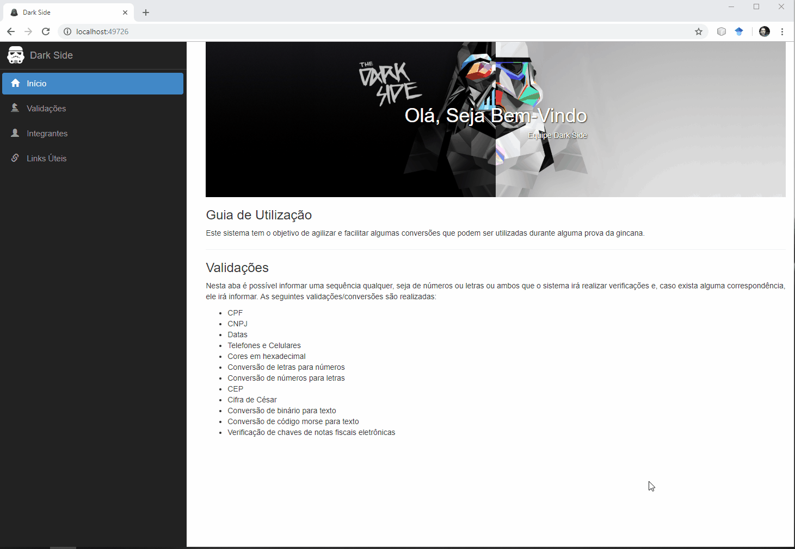

Enfim começou o Itajaí Challenge 2018, seja muito bem-vindo a melhor equipe do mundo. Para tentar ajudá-lo durante a resolução das provas, preparamos um sistema para realizar alguns procedimentos com mais agilidade e praticidade. Fique a vontade para usá-lo. Abaixo estão algumas informações do que ele faz e de como utilizado. :)
Separamos alguns links que podem ser utilizados durante as provas e que facilitam bastante alguns procedimentos. Basta acessá-los na aba de Links Úteis.
Nesta aba é possível informar uma sequência qualquer, seja de números ou letras ou ambos que o sistema irá realizar verificações e, caso exista alguma correspondência, ele irá informar. As seguintes validações/conversões são realizadas:
Abaixo você pode conferir um rápido exemplo de como utilizar.
